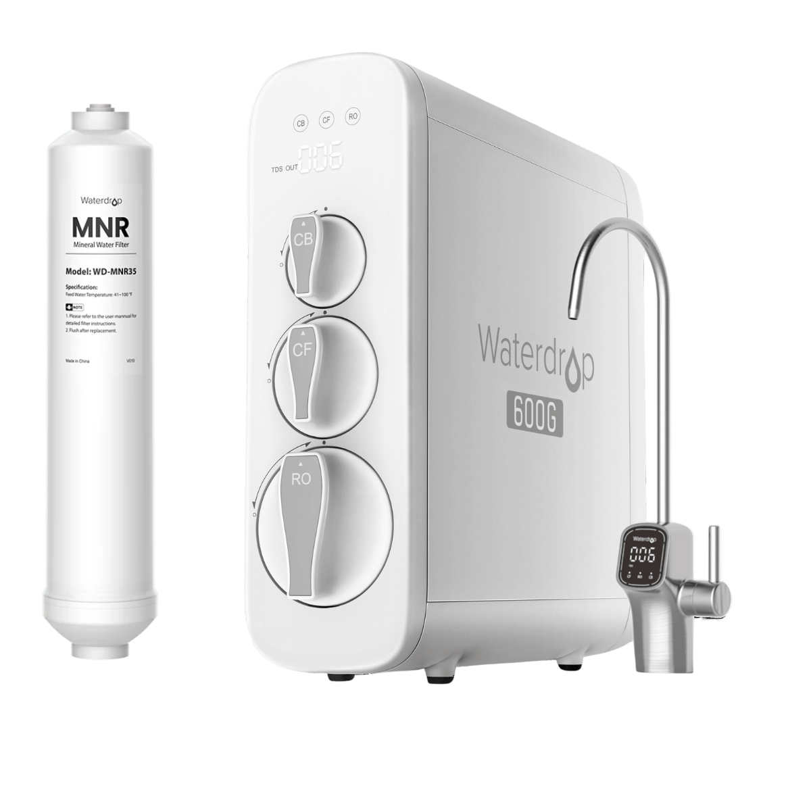
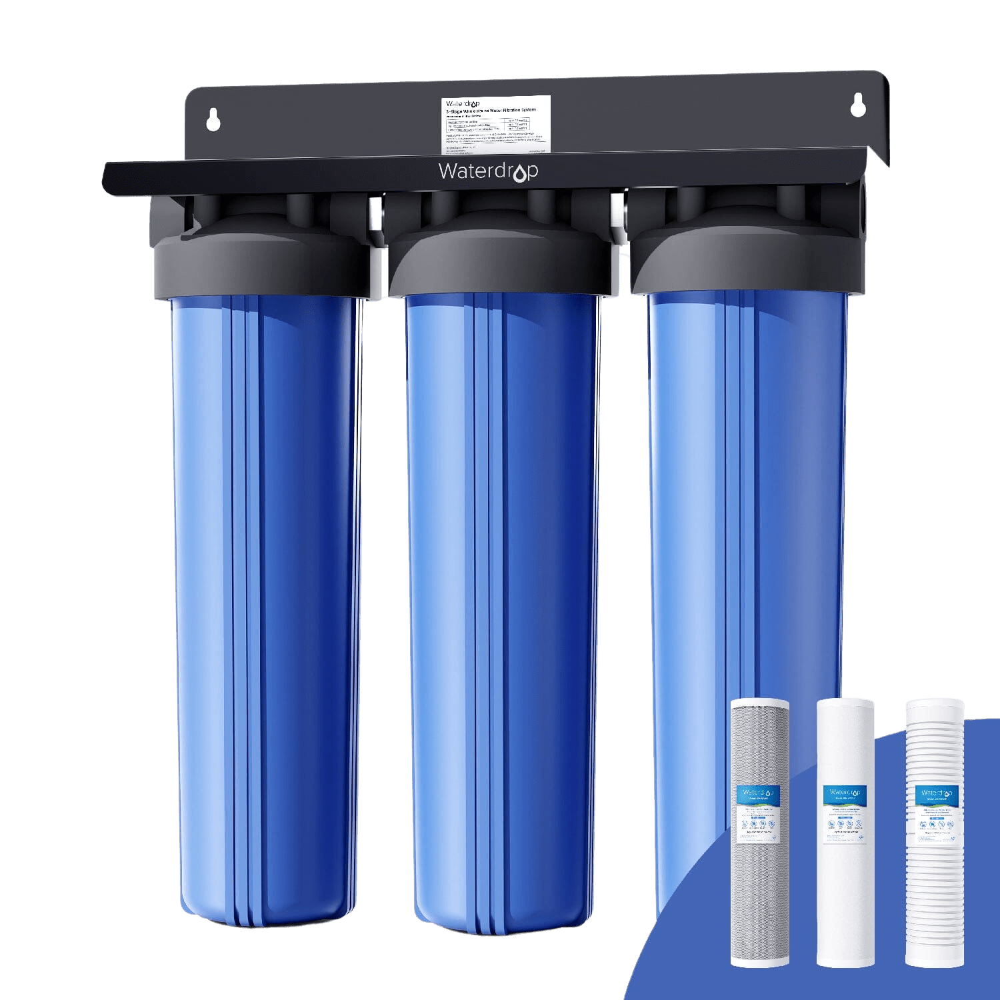
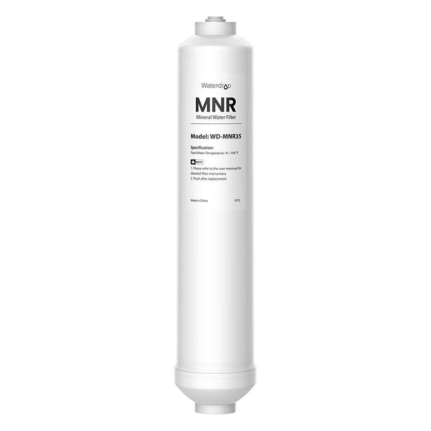
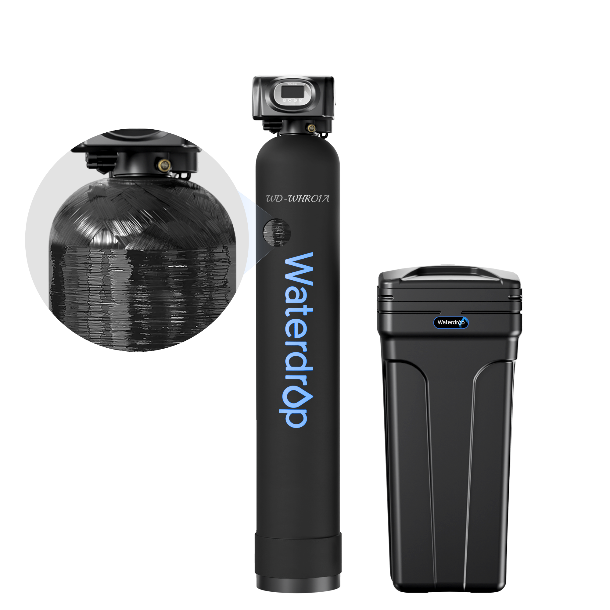

Residential Water Filtration
Reverse osmosis, whole house filtration, and softeners built for Utah's water — installed in your home, owned by you.
Our Residential Systems
Every system includes professional installation and annual filter replacement service.

AffordableG36 Entry RO
Under-Sink Reverse Osmosis
Our entry-level system delivers 600 gallons per day through 7 stages of filtration. Perfect for smaller households or anyone getting started with purified water.
 Best Seller
Best Seller
G38 Flagship RO
Under-Sink Reverse Osmosis
Our most popular system. 800 GPD capacity with 9 stages of filtration, a premium designer faucet, and TDS monitoring so you can see your water quality in real time.
 Premium
Premium
X12 Alkaline RO
Under-Sink Reverse Osmosis + Alkaline
The ultimate home system. 1200 GPD through 11 stages, including an alkaline mineral add-back filter that restores healthy minerals for optimal pH balance after purification.

WHF3T-PG Whole House
3-Stage Whole House Filtration
Protect every faucet, shower, and appliance in your home. Three stages of sediment and carbon filtration catch chlorine, rust, and particulates before they reach your pipes.

Mineral Add-Back Filter
Post-RO Mineral Restoration
Reverse osmosis removes everything — including the good stuff. This add-on restores calcium, magnesium, and trace minerals for better taste and health benefits.

Century 2 Water Softener
Whole Home Water Softening
Utah has some of the hardest water in the country. The Century 2 removes calcium and magnesium to protect your plumbing, water heater, and appliances from damaging scale buildup.
How It Works
Three simple steps to cleaner water.
Test
We test your home's water for TDS, hardness, chlorine, and contaminants — completely free, no obligation.
Choose
Based on your results, we recommend the right system for your household size, water quality, and budget.
Install
A certified technician installs your system, usually in under two hours. You're drinking pure water the same day.
How PureFlow Compares
We believe in ownership, not endless rental fees.
| Feature | PureFlow | Culligan | Kinetico | DIY / Amazon |
|---|---|---|---|---|
| Monthly Cost | From $29.95/mo | $80+/mo rental | $5,000–$8,000 upfront | $150–$400 upfront |
| You Own the System | ✓ | ✗ Rental only | ✓ | ✓ |
| Professional Installation | ✓ Included | ✓ Included | ✓ Included | ✗ Self-install |
| Annual Maintenance | ✓ Included | ✓ With rental | Extra charge | ✗ Self-service |
| Local Service Team | ✓ Wasatch Front | National franchise | Dealer network | ✗ No support |
| Contract Required | Flexible terms | Multi-year contract | None | None |
Frequently Asked Questions
Schedule Your Free Water Test
Find out exactly what's in your water. No cost, no pressure, no obligation.
Book a Water Test